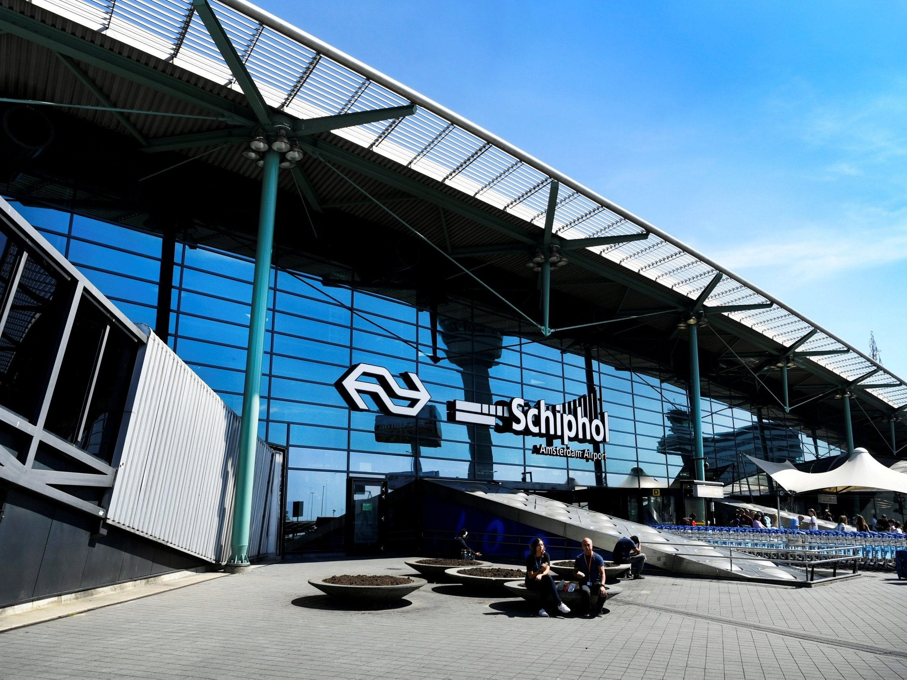
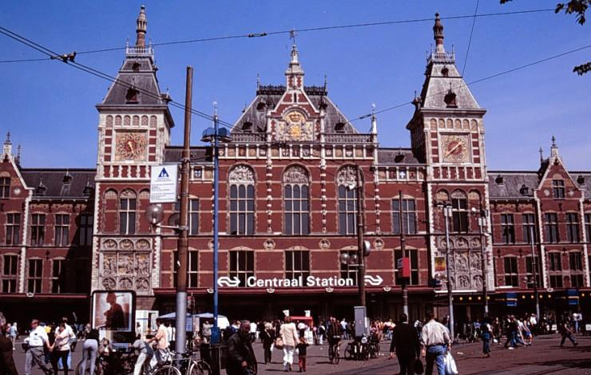
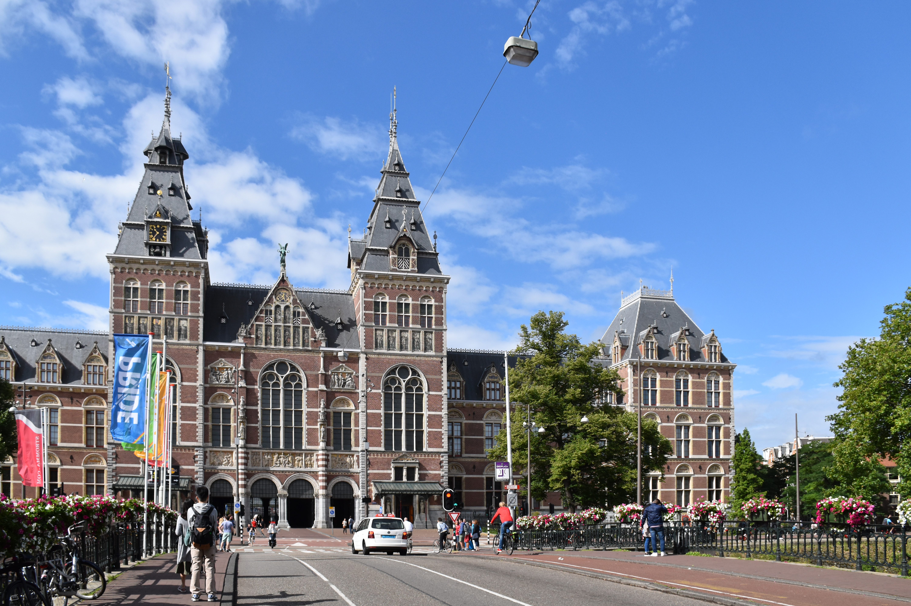
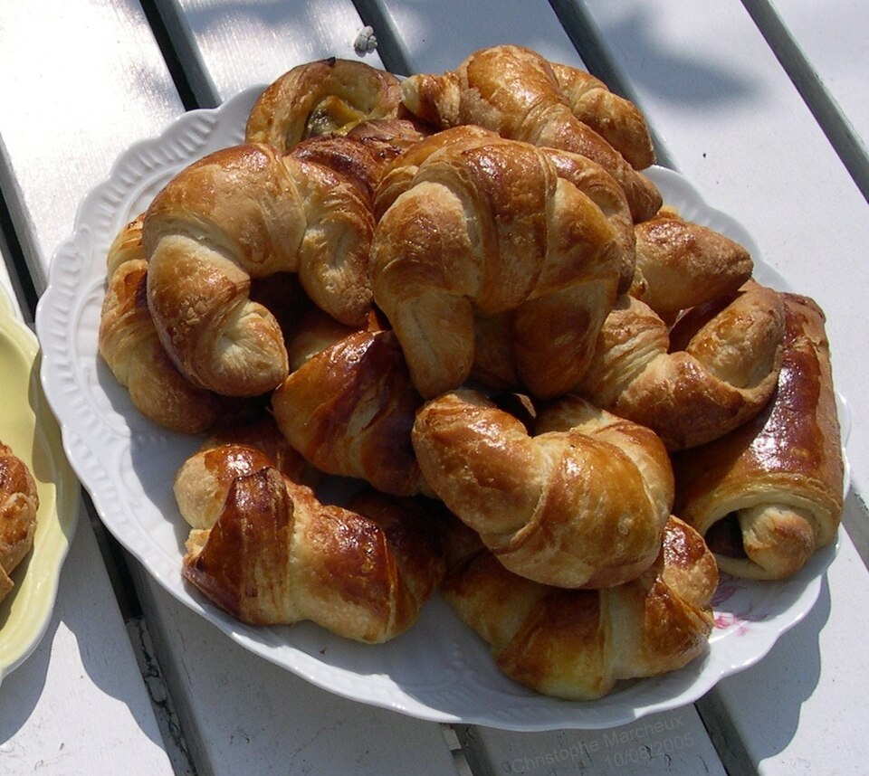
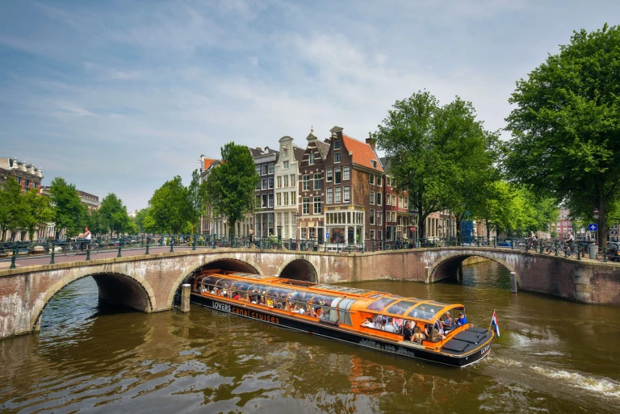
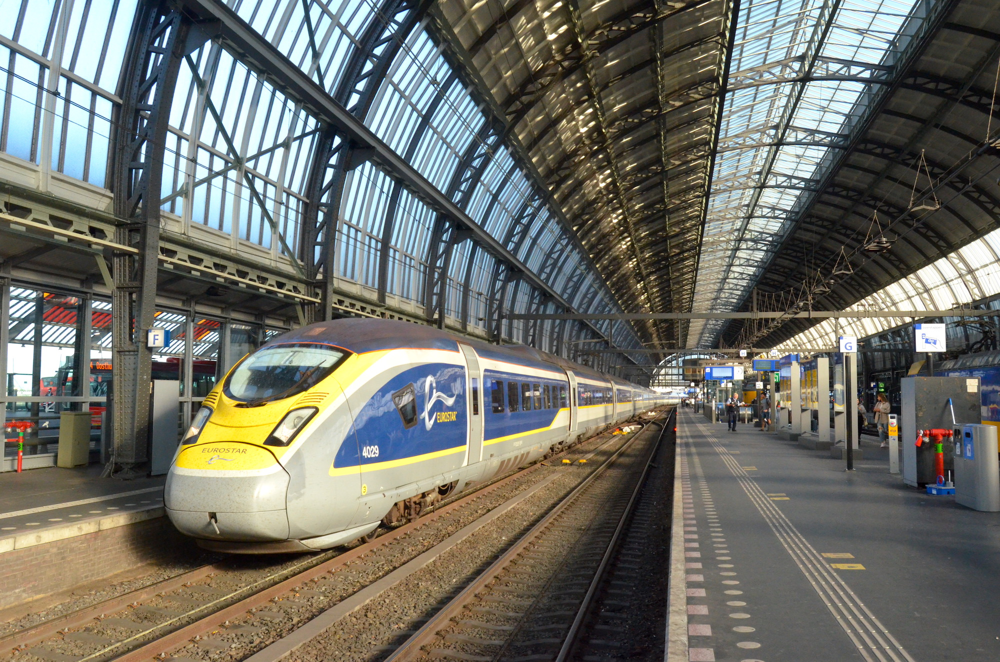
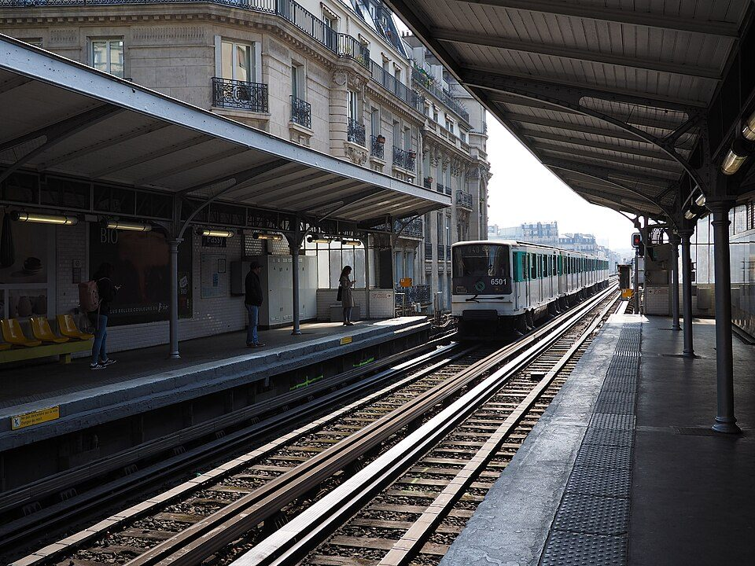
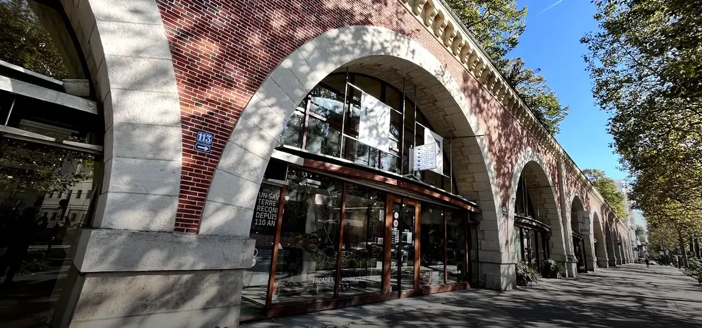

01:55–08:00
CZ307 · CAN T2（广州白云机场T2） → Amsterdam Schiphol（阿姆斯特丹史基浦机场）
01:55从广州起飞，08:00当地时间抵达阿姆斯特丹史基浦机场。
08:00–09:40
Schiphol（史基浦机场） · 第一次进入申根：EES → 边检 → 取行李 → 海关

落地以后不要自己猜方向，只认机场黄色指示牌。下 CZ307 后先跟 Baggage Hall（行李提取）方向走；你是从中国抵达、持中国护照进入申根，所以途中会先经过边境检查。若想上厕所，最好在排边检前解决，排进队伍后不要再折返。
① EES（欧盟出入境系统）：跟 Non-EU passports（非欧盟护照）标识走。Schiphol（史基浦机场）自 2026-04-10 起实行 EES。不要自己执着找某一台机器：机场官方写明，非欧盟旅客会被现场指示引到 EES kiosk（EES自助机）或 Royal Netherlands Marechaussee border desk（荷兰皇家宪兵边检柜台）。如果被引到自助机，就按屏幕依次扫描护照、拍脸、按要求录指纹，再按屏幕给出的 Route 1 / Route 2 去下一步；如果工作人员直接让你去人工柜台，就直接排队。机场同时说明：现阶段并非每名旅客每次都会完整采集脸部与指纹，所以现场流程和你网上看到的视频不完全一样也正常。无论走哪条路线，护照和本次入境日期都会登记进 EES。
② 人工边检：把护照直接交给 Royal Netherlands Marechaussee（荷兰皇家宪兵边检）。不需要主动讲一长串，只按问题回答。随手可调出的证明放在手机同一文件夹：Eurostar 9476 17:10 Amsterdam Centraal（阿姆斯特丹中央车站）→ Paris Nord（巴黎北站）、巴黎/尼斯住宿、后续米兰与离开申根的机票。
若问“为什么法国签证却从荷兰入境？”：
“I am travelling for tourism. France is my main destination. I am spending the day in Amsterdam and taking Eurostar 9476 to Paris at 17:10 today. My original flight itinerary changed, so I rebooked to Amsterdam.”
如果继续问，再出示巴黎和尼斯住宿。重点是法国仍是主要目的地、荷兰只停留白天，当晚就去巴黎，不用主动讲更多。
③ 取托运行李：过边检后进入 Baggage Hall（行李提取厅），看屏幕找 CZ307 对应的 baggage belt（行李转盘）；取到箱子后先核对行李牌。若箱子迟迟没出，不要先离开海关区，直接在行李厅找该航班 baggage handler（行李代理）柜台。
④ 海关：拿齐所有行李后往 Arrivals（到达）走。没有需要申报的物品就走绿色 Nothing to declare（无申报物品）通道；有需要申报的物品走红色 Goods to declare（有申报物品）。通过海关后不能回行李厅，出门前再摸一次：护照、手机、钱包、箱子都在。
别因为没盖传统入境章慌：EES的目的就是逐步用数字入/出境记录替代护照盖章。你真正要确认的是已经完成边检、被放行进入 Baggage Hall（行李提取厅）。手机里保留刚刚查询到的 EES “Authorised stay: OK” 截图可以自用作安心备份，但现场是否准入仍以边检实际查验为准。
09:40–10:20
Schiphol（史基浦机场） → Amsterdam Centraal（阿姆斯特丹中央车站） → Bounce · Station East 寄大箱

先坐火车：走出海关就是 Schiphol Plaza（史基浦机场公共大厅）。火车站就在 Plaza 正下方，跟 Trains / NS（火车）标识走，看 Departures（出发）屏找下一班直达 Amsterdam Centraal（阿姆斯特丹中央车站）的 NS 火车，再按当天显示的 platform（站台）下去。通常约17分钟；站台不要提前写死。
怎么买票最省事：用支持非接触支付的 Visa 实体卡在下站台前 tap in（刷入），到 Amsterdam Centraal 后用同一张实体卡 tap out（刷出）。若 Visa 刷不过，再去黄色 NS 售票机买单程票。
到中央站后不再用 NS 行李柜：从车站出来后直接步行去 Bounce · Station East · Oosterdokskade 63A, 1011 DL Amsterdam。Bounce 当前把该点标为 Travel Agency（旅行社合作点），距离 Amsterdam Centraal 约9分钟步行，评分约 4.9/5（1,000+条 Bounce 评价）；普通行李当前显示 from €3.50/day，最终金额以下单页为准。
营业时间与你这天匹配：周二 09:30–12:00、12:30–18:00。你08:00才落地，正常不会早于09:30到。这个点不要到门口再临时订：最迟在9/28出发前完成 Bounce 在线预约，并把订单二维码/确认页截图离线；Bounce 明确要求先在线预约、到店出示确认。
这个入口非常容易找错：2026年近期顾客反复提到门口没有醒目的 Bounce 招牌；实际入口在 Oosterdokskade 63A 的自行车停车场里面。定位把你带到自行车库时不要以为走错：入口在 TrainMore Gym 与 Albert Heijn 之间，过自动/双开门后往下走，沿里面的标识找合作商户 Those Amsterdames / Station East。把大箱交工作人员后，护照、银行卡、手机、Eurostar票和贵重电子设备全部留随身包。
10:20–10:50
Bounce · Station East → Amsterdam Centraal → Rijksmuseum（荷兰国立博物馆） · M52
寄完箱子后从 Station East 步行回 Amsterdam Centraal，跟 Metro / M（地铁）标识走。进站用 Visa 实体卡刷入，坐 M52 Centraal Station（中央站） → Vijzelgracht（维泽尔运河站），方向认 Zuid（南站方向）；到 Vijzelgracht（维泽尔运河站）刷同一张卡出站，再步行不到10分钟到 Rijksmuseum（荷兰国立博物馆） · Museumstraat 1（博物馆街1号）。这条比在 2026 年施工频繁的地面电车里临时挑线路更省事。
到博物馆后别找“正门大门”：真正入口在建筑下方贯穿东西的 The Passage（博物馆拱廊通道）里。从 Museumplein（博物馆广场）一侧进入 Passage，入口在你的左手。你已经把大箱寄在 Bounce · Station East；馆内只允许 A4 大小以内手袋直接带入，较大背包/雨伞需放免费寄存处，旅行箱馆内不收。
目标：10:45左右到入口，调出 11:00 门票二维码 → 过安检/寄存小背包 → 11:00 开始参观。
11:00–13:00
Rijksmuseum（荷兰国立博物馆） · 国立博物馆

已购票 Rijksmuseum（荷兰国立博物馆）官方邮件确认：2026-09-29 · 11:00–12:00 入场时间窗，1名成人，€25，订单号 28010234。这里不是“11:00整必须扫码”：馆方写的是可以在11:00–12:00这个时间块内开始参观，入馆后可停留到自己结束为止。行程目标仍是11:00左右进去，万一EES/行李比预想慢，只要仍在12:00前进入就不需要因为晚十几分钟慌。
重点参观 Gallery of Honour（荣誉画廊）、Vermeer（维米尔）、Rembrandt《The Night Watch（夜巡）》 等核心馆藏，正常仍按约2小时控制。
馆内执行：过安检后先拿/打开馆内地图，把 Gallery of Honour（荣誉画廊）和《Night Watch（夜巡）》作为第一优先级；如果11:00实际入馆晚了，不要为了“按顺序逛完整栋楼”牺牲核心馆藏。13:00前开始往出口/商店移动，给买 Miffy 和午餐留时间。
13:00–13:15
伴手礼 · Rijksmuseum Shop（荷兰国立博物馆商店） 买 Miffy
好朋友 出馆时直接逛官方商店，地址 Museumstraat 1（博物馆街1号）。优先找 Miffy × Vermeer / Milkmaid 钩织挂件；没有就看其他 Rijksmuseum（荷兰国立博物馆） × Miffy 小物。只留10–15分钟，不为库存另跑店。
13:15–13:45
博物馆区 · 午餐

在 Museumplein（博物馆广场） 周边选择简餐，13:45左右出发返回 Amsterdam Centraal（阿姆斯特丹中央车站）。
这一餐的约束比餐厅名重要：只在 Museumplein（博物馆广场）/Vijzelgracht（维泽尔运河站）回中央站的路径附近吃，30分钟解决；不要为了网红店向反方向走。13:45必须开始回 Amsterdam Centraal（阿姆斯特丹中央车站），因为下午还要游船、取箱、上17:10 Eurostar。
13:45–14:20
Rijksmuseum（荷兰国立博物馆） → Amsterdam Centraal（阿姆斯特丹中央车站）
原路最省脑子：从 Rijksmuseum（荷兰国立博物馆）步行回 Vijzelgracht（维泽尔运河站） → 乘 M52 往 Noord（北站方向） → Centraal Station（中央站） 下车。出站后再按你最终选择的运河游船公司导航到中央站附近码头。
约14:30–15:30
Amsterdam Canal Cruise（阿姆斯特丹运河游船） · 默认去 LOVERS Centraal

不在中央站门口临时比较五家公司。默认先去 LOVERS Canal Cruises · Prins Hendrikkade 25，就在 Amsterdam Centraal 对面一带；官方门店每日08:45–21:30，经典运河游船约1小时，通常要求发船前约15分钟 check-in。若 CZ307 当天明显晚点，优先保留 Rijksmuseum（荷兰国立博物馆），直接取消这一项。
现场只问一个问题：“Which one-hour cruise can get me back here by 15:30?” 如果工作人员给出的下一班无法在15:30左右回到中央站一带，就不坐，直接去 Station East 取箱。不要为了已经走到码头而硬塞一班15:00以后才开的船。
15:30–16:20
运河游船码头 / Amsterdam Centraal → Bounce · Station East 取箱 → 回中央站找 Eurostar 9476
游船结束后先取箱：从 Amsterdam Centraal 一带步行回 Bounce · Station East · Oosterdokskade 63A，目标15:40–15:55之间完成取件。出示预约确认/取件信息，拿到箱子后当场确认随身附包和拉链都正常，再步行回 Amsterdam Centraal。这个点周二18:00关门，你的取件时间留有很大余量。
再进站：回到 Amsterdam Centraal 后补水、买一点火车食物，用 Eurostar 电子票二维码过闸。看 Departures / Vertrek（出发）屏或 Eurostar App，用 17:10 + 9476 + Paris Nord（巴黎北站） 三项一起找当天 platform（站台）；站台不是票面固定信息，不提前写死。
Android 扫 Eurostar 二维码过闸时，票面特别提醒可先关闭 NFC，避免闸机误读手机里的支付卡。固定座位仍是 Coach 6（6车） · Seat 64（64座）。
这趟是荷兰→法国、都在申根区内：不是 Amsterdam→London（伦敦）那种带英国边检/专用候车区的流程。取箱后按普通国际列车逻辑进站、看 Vertrek（出发）屏、去站台、自己把箱子带上车即可。9/29–10/1 Eurostar 官网/App 正在维护，官方明确要求这几天出行的人在9/29前把票下载到手机或打印；所以 9476 车票必须在出发前离线保存。
16:20–17:10
Eurostar 9476 · 按站台 → 6车64座

票据固定：Standard，6车64座，PNR MCMMDY；17:10 开车，20:40 到 Paris Gare du Nord（巴黎北站）。车票要求16:50前到站，并最晚在发车前5分钟做好登车准备。
上车怎么找：站台公布后直接去对应 platform → 沿站台看列车门旁的 Coach 6 标识 → 上6车后找 Seat 64。行李限2件≤75cm大件 + 1件小随身包，全部需自己搬运。
17:10–20:40
Eurostar 9476 · Amsterdam（阿姆斯特丹） → Paris Nord（巴黎北站）
17:10从 Amsterdam Centraal（阿姆斯特丹中央车站） 出发，20:40抵达 Paris Gare du Nord（巴黎北站）。
20:40–21:35
Paris Gare du Nord（巴黎北站） → The People – Paris Bercy（巴黎贝西 The People 青旅） · 罢工夜双方案

A｜地铁正常就按原路线：下 Eurostar 后跟 Métro / M 标识进地铁：M4 Gare du Nord（巴黎北站） → Strasbourg–Saint-Denis（斯特拉斯堡-圣但尼站）（方向 Bagneux–Lucie Aubrac（巴涅-吕西·欧布拉克方向））→ 站内换 M8 Strasbourg–Saint-Denis（斯特拉斯堡-圣但尼站） → Daumesnil（多梅尼尔站）（方向 Créteil–Pointe du Lac（克雷泰伊-湖角方向））→ 出站后步行到 The People Paris Bercy（巴黎贝西 The People 青旅） · 28 Boulevard de Reuilly（勒伊大道28号）, 75012 Paris（巴黎）。
B｜M4 / M8 减班或停运：直接去官方出租车队伍。不要跟站内主动招揽“Taxi?”的人走。下车后留在 Grandes Lignes（长途列车）地面层，跟 Taxi / Sortie 7 / Cour des taxis（出租车候车区） 标识走；Paris Gare du Nord（巴黎北站）的无预约官方出租车上客点就在 7号出口附近。排正规队伍，上车后把青旅地址直接给司机看。
给司机看的地址：
The People Paris Bercy
28 Boulevard de Reuilly, 75012 Paris
可以直接说：“The People Paris Bercy, 28 Boulevard de Reuilly, s'il vous plaît.”
C｜用 G7 App 叫车：G7 在 Gare du Nord（巴黎北站）的官方约定接车点与 7号出口出租车排队点不是同一个位置。App 下单后，从 Rue de Dunkerque（敦刻尔克街）出口到站外，在 Burger King 门前等 G7 司机；按 App 里的车牌核对车辆再上车。
Uber / Bolt 只作第三备选：SNCF 当前把预约 VTC（网约车）上客区设在 Parking Effia（Effia 停车场）-3层。第一次到 Gare du Nord 又拖着大箱时，通常不如直接去 7号出口官方出租车队伍直观。
巴黎交通票别到闸机前才研究：若已在手机加载 Navigo Semaine，直接用手机验证；若没买周票，就在进地铁前用售票机/柜台买 Navigo Easy 并加载 Metro-Train-RER 票。巴黎普通地铁闸机不要直接拿银行卡碰读卡区当作“银行卡乘车”。若罢工导致售票区和闸机都拥堵，直接执行 Taxi 7号出口方案。
21:35–22:15
入住 The People – Paris Bercy（巴黎贝西 The People 青旅）

9/29–9/30为单独一笔6人女生宿舍订单。办理入住时同时出示9/30–10/3的下一笔订单，询问能否连续使用同一床位。